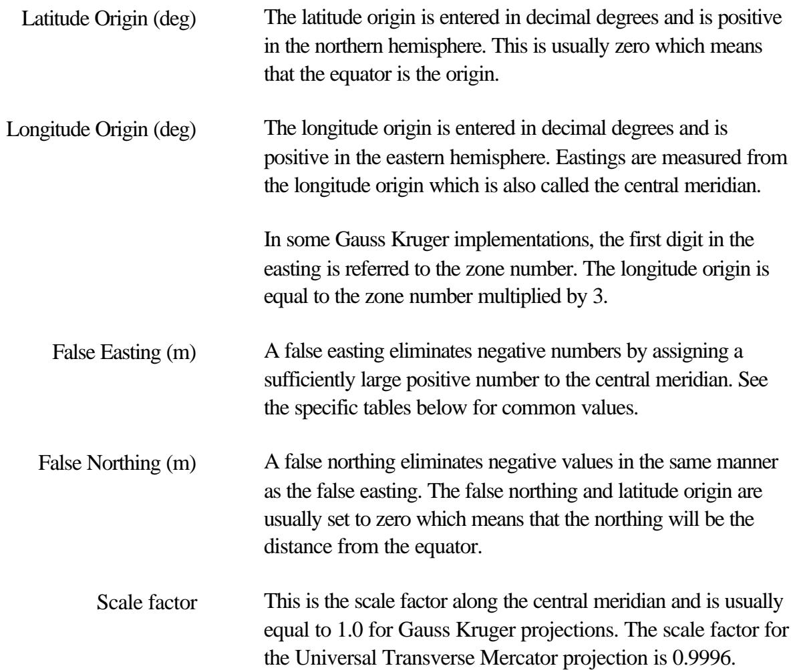
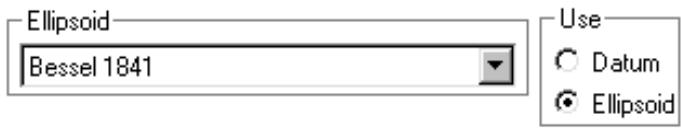
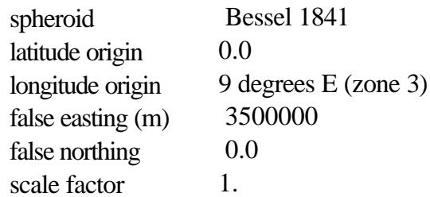
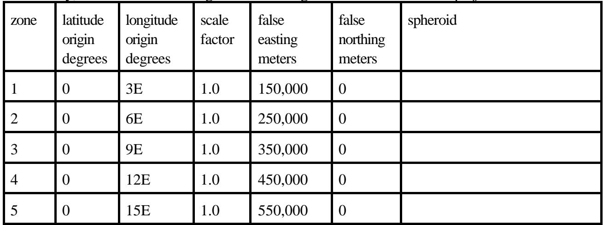

#4 textHệ tọa độ Gauss Kruger được triển khai như một phép chiếu Transverse Mercator tổng quát. Các tham số cụ thể được thiết lập trong hộp thoại Geographic Defaults. Chọn Configure - Geographic defaults. Đặt hệ tọa độ lưới [2] thành Gauss Kruger. Nút định nghĩa tham số Gauss Kruger sẽ hoạt động khi lựa chọn tọa độ lưới được thực hiện.
#5 table

#6 textKinh độ và vĩ độ gốc có thể được nhập dưới dạng độ thập phân hoặc độ phút giây với khoảng trắng phân cách các giá trị.
#7 textNút Swedish Grid thiết lập các tham số cho hệ tọa độ lưới Thụy Điển.
#8 textKhi các định nghĩa hoàn tất, đóng hộp thoại bằng nút OK. Các tham số sẽ được lưu trong tệp có tên gauskrug.bin trong thư mục chương trình pathloss. Tất cả các chuyển đổi giữa tọa độ địa lý và easting - northings sẽ sử dụng các định nghĩa này.
#9 titleEllipsoid - Datum
#10 textNgoài các tham số Transverse Mercator đã chỉ định, việc chuyển đổi giữa tọa độ địa lý và easting - northings dựa trên định nghĩa ellipsoid. Cả hai ellipsoid Bessel và Krassovsky đều được sử dụng. Do đó, bạn phải chọn một ellipsoid và đánh dấu nút Use Ellipsoid trong hộp thoại Geographic defaults.
#11 image

#12 textLưu ý rằng không có datum nào tương ứng với hai ellipsoid này.
#13 titleCơ sở dữ liệu địa hình
#14 textTùy chọn cơ sở dữ liệu địa hình Odyssey - Gauss Kruger đã được triển khai cho phép chiếu này. Tùy chọn này có thể được sử dụng với bất kỳ cơ sở dữ liệu địa hình nào có độ cao được sắp xếp theo hàng từ tây sang đông như MSI Planet. Các định nghĩa Gauss Kruger cũng có thể được thiết lập như một phần của cấu hình cơ sở dữ liệu. Điều này tương tự như việc thiết lập các tham số trong Geographic defaults.
#15 textMột vấn đề có thể xảy ra khi tạo chỉ mục cho cơ sở dữ liệu Gauss Kruger từ tệp văn bản. Đặc tả cạnh đông và cạnh tây có thể bao gồm số vùng làm chữ số đầu tiên của giá trị. Quá trình chuyển đổi kiểm tra giá trị của cạnh đông và cạnh tây. Nếu giá trị lớn hơn 1000, chữ số đầu tiên sẽ bị loại bỏ. Trong hầu hết các trường hợp, kết quả sẽ chính xác; tuy nhiên, một giá trị lớn hơn 1000 cũng có thể là một easting thực tế.
#16 titleTham số
#17 textCác tham số được sử dụng cho Phép chiếu Gauss Kruger ở Baden-Wuerttemberg là:
#18 table

#19 textỞ Đức, có 5 vùng sử dụng phép chiếu Gauss-Kruger / Transverse Mercator.
#20 table

#21 titleHệ thống lưới Thụy Điển
#22 textHệ thống lưới Thụy Điển sử dụng các tham số sau
#23 textspheroid Bessel 1841
#24 textvĩ độ gốc 0.0
#25 textkinh độ gốc 15º 48' 29.8" E (15.80827778 độ E)
#26 textfalse easting (m) 1500000.00
#27 textfalse northing 0.00
#28 texthệ số tỷ lệ 1.00
#29 titleSlovakia
#30 textỞ Slovakia, các phép chiếu sau được sử dụng: